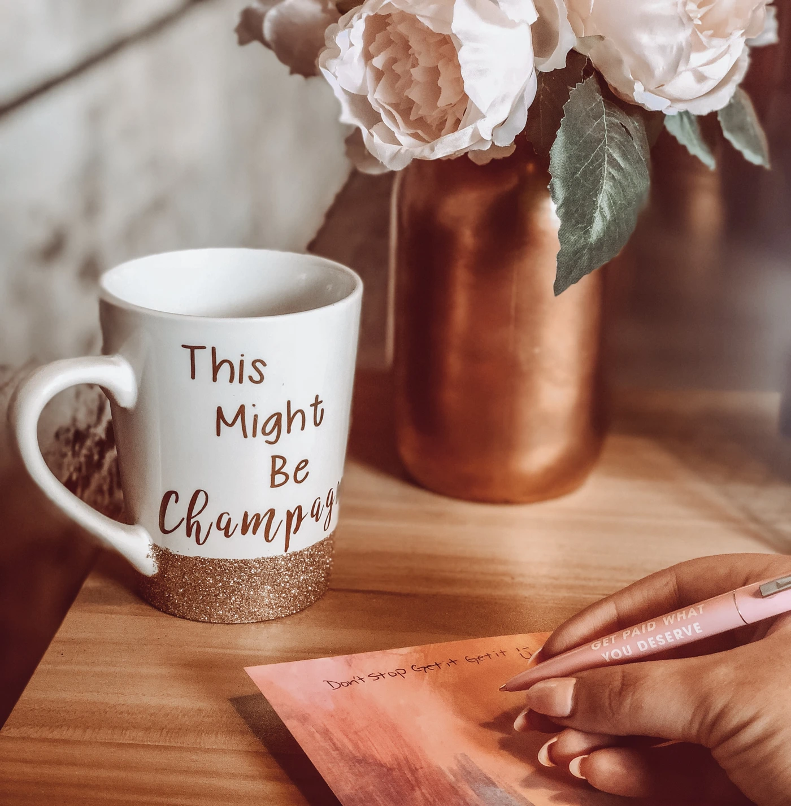
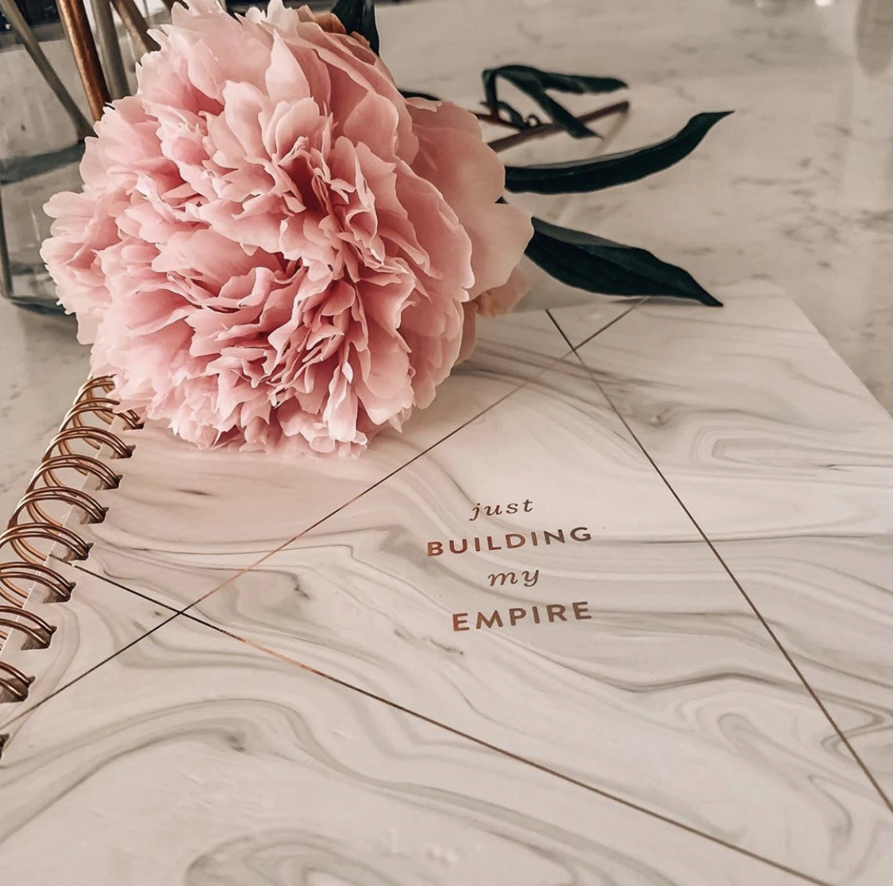

MEG AHRENBERG / OWNER, SC CREATIVE
A little strategy.
A lot of personality.
Social media, creative ideas and the person behind it all. Hi, I'm Meg, let's make a connection.
✳ For the ideas worth a conversation.

start here.
from my corner
LET'S FIND THE STARTING POINT
What's on
your mind?
Pick a conversation starter,
I'll meet you in your inbox.
Let's talk about your social media, where you are now and what you have in mind.
Start the conversation ↗A FEW THINGS FROM MY CORNER
Work, life &
the little details.
FROM THE ORIGINAL PHOTO COLLECTION
GOOD CONNECTIONS START SOMEWHERE